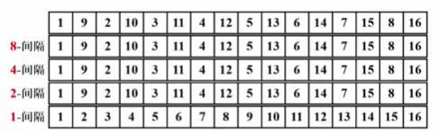
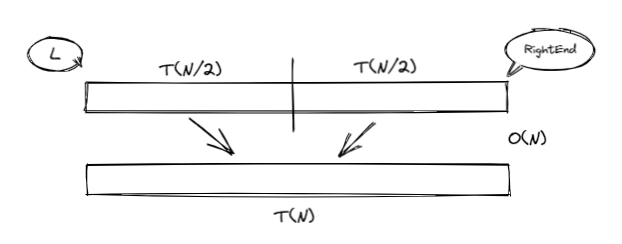

排序 | Sort👀
约 1698 个字 395 行代码 预计阅读时间 11 分钟
简单排序👀
预备知识
void XSort(ElementType A[], int N)
- 大多数情况下，为简单起见，讨论从小到大的整数排序
- N是正整数
- 只讨论基于比较的排序（> = < 有定义）
- 只讨论内部排序
- 稳定性：任意两个相等的数据，排序前后的相对位置不发生改变
- 没有一种排序是任何情况下都表现最好的
-
插入排序
code
- 最好情况: 输入 A[] 是有序的, \(T(N) = O(N)\)
- 最坏情况: 输入 A[] 是逆序的, \(T(N) = O(N^2)\)
引申–时间复杂度下界
- 对于下标 i < j, 如果 A[i] > A[j], 则称 (i, j) 是一对逆序对 (inversion)
- 冒泡和插入排序每次交换两个相邻元素都正好消去一个逆序对
- 插入排序: \(T(N, I) = O(N + I)\)
- 其中 I 是原始序列中逆序对的数量
- 定理:
- 任意 N 个不同元素组成的序列平均具有 \(\frac{N（N-1）}{4}\) 个逆序对
- 任何仅以交换相邻元素来排序的算法，其平均时间复杂度为 \(\Omega (N^2)\) ( \(\Omega\) 指的是下界)
要提高算法效率，需要
1. 每次消去不止一对逆序对
2. 每次尽量交换相隔较远的元素
希尔排序 | Shell Sort👀
Abstract
- 定义增量序列 \(h_t > h_{t-1} > ··· > h_1 = 1\)
- 对每个 \(h_t\) 进行 “\(h_t\) -间隔” 排序
“\(h_t\) -间隔” 有序的序列，在执行 “\(h_{t-1}\) -间隔” 排序后，仍然是 “\(h_t\) -间隔” 有序的
希尔增量序列👀
- \(h_t = \lfloor N / 2\rfloor\) , \(h_k = \lfloor h_k+1 / 2 \rfloor\)
- 最坏情况: 只在 1-sort 排序, \(T(N) = O(N^2)\)
void Shellsort( ElementType A[ ], int N )
{
int i, j, Increment;
ElementType Tmp;
for( Increment = N / 2; Increment > 0; Increment /= 2 )
/*h sequence */
for( i = Increment; i < N; i++ )
{ /* insertion sort */
Tmp = A[ i ];
for ( j = i; j >= Increment; j - = Increment )
if( Tmp < A[ j - Increment ] )
A[ j ] = A[ j - Increment ];
else
break;
A[ j ] = Tmp;
} /* end for-I and for-Increment loops */
}
更多增量序列👀
Question
当增量元素不互质时，导致小增量可能不起作用, 如:

{kind=link}
- Hibbard 增量序列
- \(h_k = 2^k - 1\) —— 相邻元素互质
- 最坏情况: \(T(N) = \Theta (N^{3/2})\)
- 猜想: \(T_{avg}(N) =O(N^{5/4})\)
- Sedgewick 增量序列 —— { 1，5，19，41，109，··· }
- \(9\times 4^i - 9\times 2^i + 1\) 或 \(4^i - 3\times 2^i + 1\)
- 猜想: \(T_{avg}(N) = O(N^{7/6})\), \(T_{worst}(N) = O(N^{4/3})\)
当元素数量较大时，采用希尔排序 + Sedgewick 增量序列较为高效
堆排序👀
- 使用堆结构排序
- 算法一: 将元素插入堆中再依次 DeleteMin
void Heap_Sort(ElementType A[], int N) { int i; BuildHeap(A); /* O(N) */ for(i = 0; i < N; i++) { TempA[i] = DeleteMin(A); /* O(logN) */ } for(i = 0; i < N; i++) /* O(N) */ { A[i] = TempA[i]; } }- \(T(N) = O(N logN)\)
- 但需要额外的 \(O(N)\) 空间，并且复制元素需要时间
- 算法二: 以线性时间建立堆(Percolate), 再循环将堆顶元素与最后一个元素交换再 Percolate
- 以最大堆为例:
- 以最大堆为例:
- 堆排序处理 N 个不同元素的随机排列的平均比较次数为 \(2NlogN - O(NloglogN)\)
虽然堆排序给出最佳平均时间复杂度，但实际效果不如希尔排序 + Sedgewick 增量
补全函数
void Swap( ElementType *a, ElementType *b )
{
ElementType t = *a; *a = *b; *b = t;
}
void PercDown( ElementType A[], int p, int N )
{
/* 将N个元素的数组中以A[p]为根的子堆调整为最大堆 */
int Parent, Child;
ElementType X;
X = A[p]; /* 取出根结点存放的值 */
for( Parent=p; (Parent*2+1)<N; Parent=Child ) {
Child = Parent * 2 + 1;
if( (Child!=N-1) && (A[Child]<A[Child+1]) )
Child++; /* Child指向左右子结点的较大者 */
if( X >= A[Child] ) break; /* 找到了合适位置 */
else /* 下滤X */
A[Parent] = A[Child];
}
A[Parent] = X;
}
归并排序👀
- 关键是合并两个有序列表变成一个有序列表 (可以递归进行、分而治之)
- 递归算法:
- 分而治之
 - \(T(N) = T(N/2) + T(N/2) + O(N)\) \(\rightarrow\) \(T(N) = O(NlogN)\)
code
/* L = 左边起始位置, R = 右边起始位置, RightEnd = 右边终点位置*/ void Merge( ElementType A[], ElementType TmpA[], int L, int R, int RightEnd ) { /* 将有序的A[L]~A[R-1]和A[R]~A[RightEnd]归并成一个有序序列 */ int LeftEnd, NumElements, Tmp; int i; LeftEnd = R - 1; /* 左边终点位置 */ Tmp = L; /* 有序序列的起始位置 */ NumElements = RightEnd - L + 1; while( L <= LeftEnd && R <= RightEnd ) { if ( A[L] <= A[R] ) TmpA[Tmp++] = A[L++]; /* 将左边元素复制到TmpA */ else TmpA[Tmp++] = A[R++]; /* 将右边元素复制到TmpA */ } while( L <= LeftEnd ) TmpA[Tmp++] = A[L++]; /* 直接复制左边剩下的 */ while( R <= RightEnd ) TmpA[Tmp++] = A[R++]; /* 直接复制右边剩下的 */ for( i = 0; i < NumElements; i++, RightEnd -- ) A[RightEnd] = TmpA[RightEnd]; /* 将有序的TmpA[]复制回A[] */ } void Msort( ElementType A[], ElementType TmpA[], int L, int RightEnd ) { /* 核心递归排序函数 */ int Center; if ( L < RightEnd ) { Center = (L+RightEnd) / 2; Msort( A, TmpA, L, Center ); /* 递归解决左边 */ Msort( A, TmpA, Center+1, RightEnd ); /* 递归解决右边 */ Merge( A, TmpA, L, Center+1, RightEnd ); /* 合并两段有序序列 */ } } void MergeSort( ElementType A[], int N ) { /* 归并排序 */ ElementType *TmpA; TmpA = (ElementType *)malloc(N*sizeof(ElementType)); if ( TmpA != NULL ) { Msort( A, TmpA, 0, N-1 ); free( TmpA ); } else printf( "空间不足" ); } - 分而治之
-
非递归算法:
code
/* 这里Merge函数在递归版本中给出 */ /* length = 当前有序子列的长度*/ void Merge_pass( ElementType A[], ElementType TmpA[], int N, int length ) { /* 两两归并相邻有序子列 */ int i, j; for ( i=0; i <= N-2*length; i += 2*length ) Merge( A, TmpA, i, i+length, i+2*length-1 ); if ( i+length < N ) /* 归并最后2个子列*/ Merge( A, TmpA, i, i+length, N-1); else /* 最后只剩1个子列*/ for ( j = i; j < N; j++ ) TmpA[j] = A[j]; } void Merge_Sort( ElementType A[], int N ) { int length; ElementType *TmpA; length = 1; /* 初始化子序列长度*/ TmpA = malloc( N * sizeof( ElementType ) ); if ( TmpA != NULL ) { while( length < N ) { Merge_pass( A, TmpA, N, length ); length *= 2; Merge_pass( TmpA, A, N, length ); length *= 2; } free( TmpA ); } else printf( "空间不足" ); }
{kind=link}
归并排序在外排序中较为有用
快速排序👀
void Quicksort(ElementType A[], int N)
{
if(N < 2)
return;
pivot = 从 A[] 中选一个主元;
将 S = { A[] \ pivot } 分成两个独立子集 A1 和 A2;
A[] = Quicksort(A1, N1) + {pivot} + Quicksort(A2, N2);
}
分而治之:
快速排序的最好情况 —— 每次正好中分 —— \(T(N) = O(NlogN)\)
两个主要步骤: 选主元、子集划分
- 一次划分过程:
假设对以下十个数字快速排序
假如选取第一个数字为 pivot, 即 pivot = 6, 要使得 6 左边的数字都 <= 6, 左边的数都 >= 6. 那么定义左边一个 "哨兵" i (i 从 1 开始), 右边为 j
首先从右向左移动 j 直到找到小于 6 的数, 再从左向右找到大于 6 的数
交换他们
移动 "哨兵" (提醒 : 每次必须 j 先出发)
交换
继续移动, 此时 j 向左移动发现 3 < 6 停下. 移动 i , 此时 i 与 j 相遇 ——> 第一次 "探测" 结束，将 pivot = 6 和 3 交换
随后以 6 为分界点拆分成两个序列 ("3 1 2 5 4" & "9 7 10 8") 再依次 "探测" ···
| 6 | 1 | 2 | 7 | 9 | 3 | 4 | 5 | 10 | 8 |
| 6 | 1 | 2 | 7 | 9 | 3 | 4 | 5 | 10 | 8 |
| i | j |
| 6 | 1 | 2 | 7 | 9 | 3 | 4 | 5 | 10 | 8 |
| i | j |
| 6 | 1 | 2 | 5 | 9 | 3 | 4 | 7 | 10 | 8 |
| i | j |
| 6 | 1 | 2 | 5 | 9 | 3 | 4 | 7 | 10 | 8 |
| i | j | ||||||||
| 6 | 1 | 2 | 5 | 9 | 3 | 4 | 7 | 10 | 8 |
| i | j |
| 6 | 1 | 2 | 5 | 4 | 3 | 9 | 7 | 10 | 8 |
| i | j |
| 3 | 1 | 2 | 5 | 4 | 6 | 9 | 7 | 10 | 8 |
| i j |
选主元👀
- 错误方法: pivot = arr[0] (对于已经排列好顺序的组合仍会消耗掉 \(O(N^2)\) 的时间)
- 安全方法: pivot = random element in arr (额外带来的开销: 随机数的生成)
-
三数中值分割 | Median-of-Partitioning: pivot = median(left + center + right)
Median3
ElementType Median3(ElementType A[], int Left, int Right) { int Center = (Left + Right) / 2; if(A[Left] > A[Center]) { Swap(&A[Left], &A[Center]); } else if(A[Left] > A[Right]) { Swap(&A[Left], &A[Right]); } else if(A[Right] < A[Center]) { Swap(&A[Right], &A[Center]); } /* A[Left] <= A[Center] <= A[Right] */ Swap(&A[Center], &A[Right-1]); //将 pivot 藏到右边 /* 只需要考虑 A[Left+1] ... A[Right-2] */ return A[Right-1]; /* 返回 pivot */ }
子集划分👀
- 当有元素正好等于 pivot 时
- 停下来交换 √
- 不理他，继续移动指针 ×
补充
- 小数组
- 对于 N (N \(\le\) 20), 快速排序慢于插入排序
- 可以在递归到 N 较小的情况下将快速排序更改为插入排序
- 复杂度 – \(T(N) = T(i) + T(N-i-1) + cN\)
- \(T_{worst}(N) = T(N-1) + cN ~ \rightarrow ~ T(N) = O(N^2)\)
- \(T_{best}(N) = 2T(N/2) + cN ~ \rightarrow ~ T(N) = O(NlogN)\)
- Average Case:
- 假设对每个 i, \(T(i)\) 的平均值是 \(\frac{1}{N}[\sum\limits_{j=0}^{N-1} T(j)]\)
- \(T(N) = \frac{2}{N}[\sum\limits_{j=0}^{N-1} T(j)] + cN ~ \rightarrow ~ T(N) = O(NlogN)\)
完整算法
/* 快速排序 */
ElementType Median3( ElementType A[], int Left, int Right )
{
int Center = (Left+Right) / 2;
if ( A[Left] > A[Center] )
Swap( &A[Left], &A[Center] );
if ( A[Left] > A[Right] )
Swap( &A[Left], &A[Right] );
if ( A[Center] > A[Right] )
Swap( &A[Center], &A[Right] );
/* 此时A[Left] <= A[Center] <= A[Right] */
Swap( &A[Center], &A[Right-1] ); /* 将基准Pivot藏到右边*/
/* 只需要考虑A[Left+1] … A[Right-2] */
return A[Right-1]; /* 返回基准Pivot */
}
void Qsort( ElementType A[], int Left, int Right )
{ /* 核心递归函数 */
int Pivot, Cutoff, Low, High;
if ( Cutoff <= Right-Left ) { /* 如果序列元素充分多，进入快排 */
Pivot = Median3( A, Left, Right ); /* 选基准 */
Low = Left; High = Right-1;
while (1) { /*将序列中比基准小的移到基准左边，大的移到右边*/
while ( A[++Low] < Pivot ) ;
while ( A[--High] > Pivot ) ;
if ( Low < High ) Swap( &A[Low], &A[High] );
else break;
}
Swap( &A[Low], &A[Right-1] ); /* 将基准换到正确的位置 */
Qsort( A, Left, Low-1 ); /* 递归解决左边 */
Qsort( A, Low+1, Right ); /* 递归解决右边 */
}
else InsertionSort( A+Left, Right-Left+1 ); /* 元素太少，用简单排序 */
}
void QuickSort( ElementType A[], int N )
{ /* 统一接口 */
Qsort( A, 0, N-1 );
}
基数排序👀
Abstract
- 这之上的排序算法都有一个共同点 :
- 仅仅基于比较大小决定排序位置，所有这些算法时间复杂度都需要进行 \(\Omega (NlogN)\) 次比较
- 只用到比较的任何排序算法在最坏情况下都需要 \(\lceil log(N!) \rceil\) 次比较并平均需要 \(log(N!)\) 次比较
桶排序👀
- 如果输入数据都小于 M，则可以用一个大小为 M 的数组来记录某个值出现了多少次，这个数组称为桶 (bucket)
- 桶初始化为 0，遍历输入数据，将每个数据对应的桶加 1
- 最后遍历桶中的所有元素，对于 bucket[x] = y，将 x 输出 y 次
- 时间复杂度 \(O(N+M)\) (如果 N \(\ll\) M, 用基数排序)
Example
- 假设有 N 个学生, 他们的成绩是 0 到 100 之间的整数 (于是有 M = 101 个不同的成绩值) 。如何在线性时间将学生按成绩排序:
基数排序👀
- 从低位（LSD，Least Significant Digit）到高位（MSD），对每一位进行进行排序 (次位优先)
- 时间复杂度 \(O(P(N+B))\) , 其中 \(P\) 为轮数, \(N\) 为元素个数, \(B\) 为桶个数
{kind=link}
code-LSD
/* 基数排序 - 次位优先 */
/* 假设元素最多有MaxDigit个关键字，基数全是同样的Radix */
#define MaxDigit 4
#define Radix 10
/* 桶元素结点 */
typedef struct Node *PtrToNode;
struct Node {
int key;
PtrToNode next;
};
/* 桶头结点 */
struct HeadNode {
PtrToNode head, tail;
};
typedef struct HeadNode Bucket[Radix];
int GetDigit ( int X, int D )
{ /* 默认次位D=1, 主位D<=MaxDigit */
int d, i;
for (i=1; i<=D; i++) {
d = X % Radix;
X /= Radix;
}
return d;
}
void LSDRadixSort( ElementType A[], int N )
{ /* 基数排序 - 次位优先 */
int D, Di, i;
Bucket B;
PtrToNode tmp, p, List = NULL;
for (i=0; i<Radix; i++) /* 初始化每个桶为空链表 */
B[i].head = B[i].tail = NULL;
for (i=0; i<N; i++) { /* 将原始序列逆序存入初始链表List */
tmp = (PtrToNode)malloc(sizeof(struct Node));
tmp->key = A[i];
tmp->next = List;
List = tmp;
}
/* 下面开始排序 */
for (D=1; D<=MaxDigit; D++) { /* 对数据的每一位循环处理 */
/* 下面是分配的过程 */
p = List;
while (p) {
Di = GetDigit(p->key, D); /* 获得当前元素的当前位数字 */
/* 从List中摘除 */
tmp = p; p = p->next;
/* 插入B[Di]号桶尾 */
tmp->next = NULL;
if (B[Di].head == NULL)
B[Di].head = B[Di].tail = tmp;
else {
B[Di].tail->next = tmp;
B[Di].tail = tmp;
}
}
/* 下面是收集的过程 */
List = NULL;
for (Di=Radix-1; Di>=0; Di--) { /* 将每个桶的元素顺序收集入List */
if (B[Di].head) { /* 如果桶不为空 */
/* 整桶插入List表头 */
B[Di].tail->next = List;
List = B[Di].head;
B[Di].head = B[Di].tail = NULL; /* 清空桶 */
}
}
}
/* 将List倒入A[]并释放空间 */
for (i=0; i<N; i++) {
tmp = List;
List = List->next;
A[i] = tmp->key;
free(tmp);
}
}
code-MSD
/* 基数排序 - 主位优先 */
/* 假设元素最多有MaxDigit个关键字，基数全是同样的Radix */
#define MaxDigit 4
#define Radix 10
/* 桶元素结点 */
typedef struct Node *PtrToNode;
struct Node{
int key;
PtrToNode next;
};
/* 桶头结点 */
struct HeadNode {
PtrToNode head, tail;
};
typedef struct HeadNode Bucket[Radix];
int GetDigit ( int X, int D )
{ /* 默认次位D=1, 主位D<=MaxDigit */
int d, i;
for (i=1; i<=D; i++) {
d = X%Radix;
X /= Radix;
}
return d;
}
void MSD( ElementType A[], int L, int R, int D )
{ /* 核心递归函数: 对A[L]...A[R]的第D位数进行排序 */
int Di, i, j;
Bucket B;
PtrToNode tmp, p, List = NULL;
if (D==0) return; /* 递归终止条件 */
for (i=0; i<Radix; i++) /* 初始化每个桶为空链表 */
B[i].head = B[i].tail = NULL;
for (i=L; i<=R; i++) { /* 将原始序列逆序存入初始链表List */
tmp = (PtrToNode)malloc(sizeof(struct Node));
tmp->key = A[i];
tmp->next = List;
List = tmp;
}
/* 下面是分配的过程 */
p = List;
while (p) {
Di = GetDigit(p->key, D); /* 获得当前元素的当前位数字 */
/* 从List中摘除 */
tmp = p; p = p->next;
/* 插入B[Di]号桶 */
if (B[Di].head == NULL) B[Di].tail = tmp;
tmp->next = B[Di].head;
B[Di].head = tmp;
}
/* 下面是收集的过程 */
i = j = L; /* i, j记录当前要处理的A[]的左右端下标 */
for (Di=0; Di<Radix; Di++) { /* 对于每个桶 */
if (B[Di].head) { /* 将非空的桶整桶倒入A[], 递归排序 */
p = B[Di].head;
while (p) {
tmp = p;
p = p->next;
A[j++] = tmp->key;
free(tmp);
}
/* 递归对该桶数据排序, 位数减1 */
MSD(A, i, j-1, D-1);
i = j; /* 为下一个桶对应的A[]左端 */
}
}
}
void MSDRadixSort( ElementType A[], int N )
{ /* 统一接口 */
MSD(A, 0, N-1, MaxDigit);
}
如果次位关键字建的桶很少，而主位关键字建的桶很多使元素分散开，这时再在桶内部排序可能就只涉及几个元素的排序，这时 MSD 可能就要更快了
排序算法的比较👀
| 排序算法 | 平均时间复杂度 | 最坏时间复杂度 | 额外空间复杂度 | 稳定性 |
|---|---|---|---|---|
| 冒泡排序 | \(O(N^2)\) | \(O(N^2)\) | \(O(1)\) | 稳定 |
| 直接插入排序 | \(O(N^2)\) | \(O(N^2)\) | \(O(1)\) | 稳定 |
| 归并排序 | \(O(NlogN)\) | \(O(NlogN)\) | \(O(N)\) | 稳定 |
| 基数排序 | \(O(P(N+B))\) | \(O(P(N+B))\) | \(O(N+B)\) | 稳定 |
| 简单选择排序 | \(O(N^2)\) | \(O(N^2)\) | \(O(1)\) | 不稳定 |
| 希尔排序 | \(O(N^d)\) | \(O(N^2)\) | \(O(1)\) | 不稳定 |
| 堆排序 | \(O(NlogN)\) | \(O(NlogN)\) | \(O(1)\) | 不稳定 |
| 快速排序 | \(O(NlogN)\) | \(O(N^2)\) | \(O(logN)\) | 不稳定 |